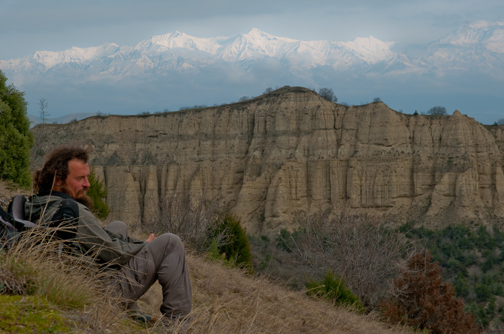

Azerbaidjan: Longer le Caucase, une opération très aquatique…
Si vous longez le Caucase vous constaterez qu’énormément de torrents descendent des montagnes. Bien que nous soyons passé dans cette région à la fin de l’hiver, nous avons pu voir que déjà la plupart des cours d’eau étaient difficilement franchissable à pied. Cela nous laisse supposer qu’à la fonte des neige cette éventualité n’est tout bonnement plus envisageable.
Bien que ce ne soit pas une perspective bien réjouissante, nous avons du nous résoudre à ne pas trop nous éloigner de la route principale qui a le principal intérêt de franchir tous ces cours d’eau sur des ponts. La plupart des routes secondaires qui semblent traverser les cours d’eau plus en amont ou plus en aval le font souvent qu’en permettant aux véhicules de rouler directement dans l’eau. Nous avons aussi été face à des ponts ou des passerelles détruites qu’il aurait été dangereux d’emprunter.
La meilleure solution que nous ayons trouver pour éviter de marcher sur les routes a été de nous éloigner franchement du Caucase et d’aller évoluer dans la petite chaîne de colline plus au sud. Cette région est tout à fait plaisante car majoritairement rurale et la vue sur le Caucase dont on dispose depuis les sommets de ces collines est tout bonnement magnifique.

Il existe néanmoins quelques cours d’eau majeurs qui traversent ces montagnes selon un axe nord-sud. Les ponts ici sont rares et les emprunter peut impliquer des détours de plusieurs dizaines de kilomètres. Toutefois, avec un peu de chance, un paysan avec une charrette tirée par un cheval peut vous permettre de traverser en montant sur son véhicule. La sensation de sécurité lors de cette traversé improvisée n’est pas sensationnelle, mais cela procure des souvenirs…